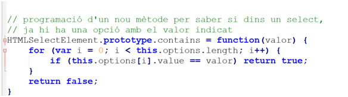

Una vegada la petició Ajax té status 200 i readyState 4 ja es pot tractar la resposta, amb algun dels mètodes:
Al carregar la web poblar el select amb id llista amb totes les marques que hi ha dins l'arxiu (sense repeticions). I quan l'usuari seleccioni una marca es mostrin les dades de tots els cotxes d'aquesta. Mostrar primer una etiqueta h2 amb la marca i després una etiqueta dl on cada dt serà el model i cada dd serà el color i el motor. Ajuda sobre etiqueta dl

Es pot utilitzar aquest prototip "contains".
Al carregar la pàgina web generar una llista (ol) amb els noms dels atistes (ARTIST) ordenats alfabèticament i sense repeticions. Al fer doble click sobre un artista mostrarà totes les dades d'aquell artista en una taula.